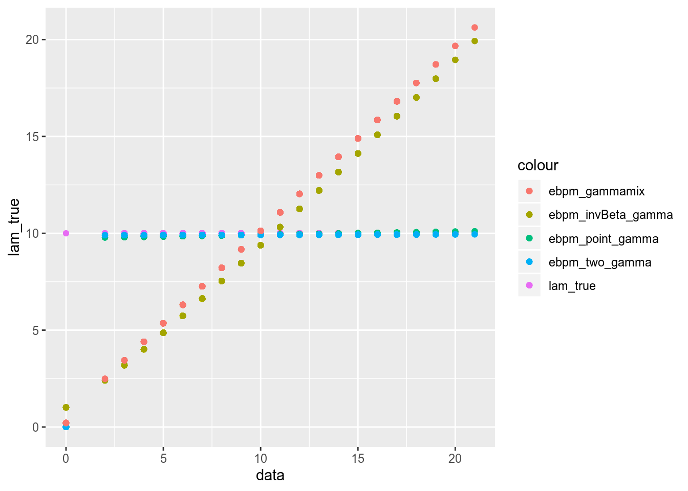
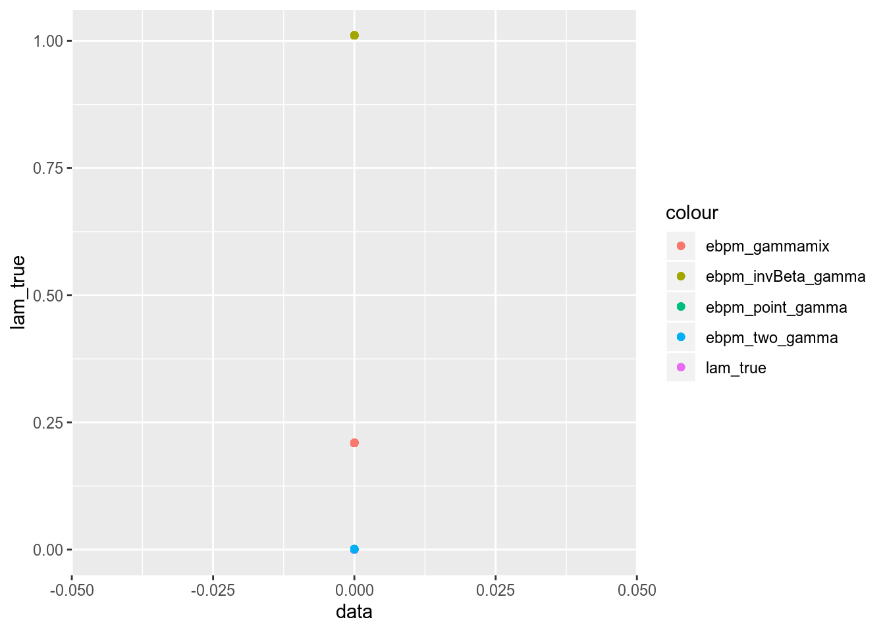
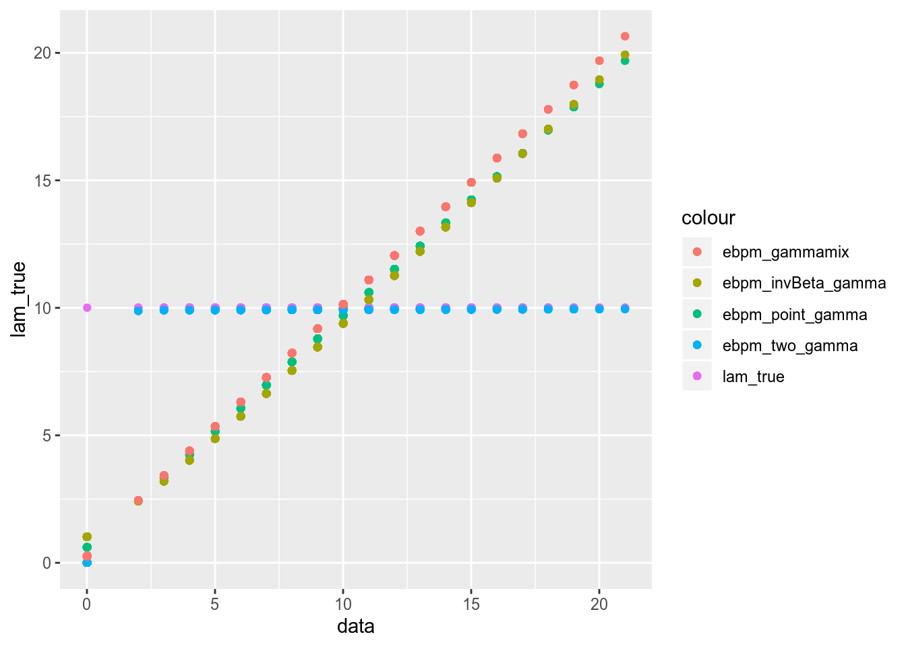
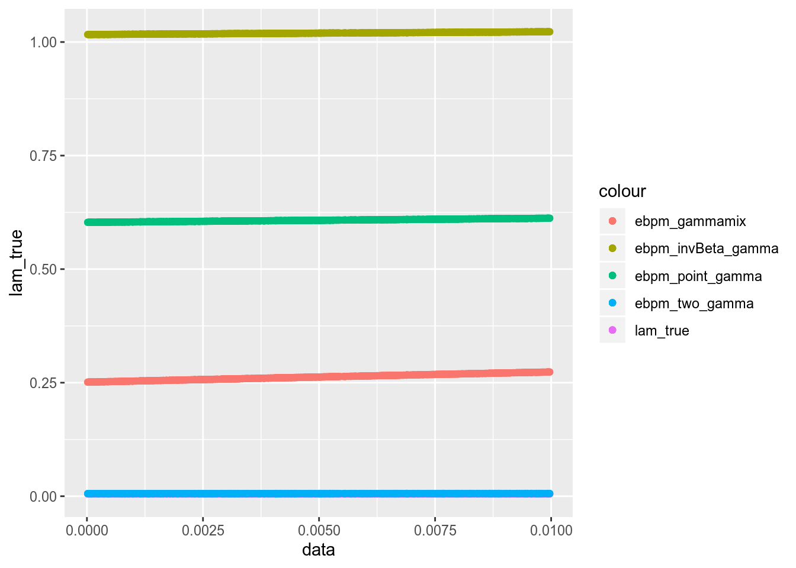

Last updated: 2020-02-12
Checks: 7 0
Knit directory: ebpmf_demo/
This reproducible R Markdown analysis was created with workflowr (version 1.6.0). The Checks tab describes the reproducibility checks that were applied when the results were created. The Past versions tab lists the development history.
Great! Since the R Markdown file has been committed to the Git repository, you know the exact version of the code that produced these results.
Great job! The global environment was empty. Objects defined in the global environment can affect the analysis in your R Markdown file in unknown ways. For reproduciblity it’s best to always run the code in an empty environment.
The command set.seed(20190923) was run prior to running the code in the R Markdown file. Setting a seed ensures that any results that rely on randomness, e.g. subsampling or permutations, are reproducible.
Great job! Recording the operating system, R version, and package versions is critical for reproducibility.
Nice! There were no cached chunks for this analysis, so you can be confident that you successfully produced the results during this run.
Great job! Using relative paths to the files within your workflowr project makes it easier to run your code on other machines.
Great! You are using Git for version control. Tracking code development and connecting the code version to the results is critical for reproducibility. The version displayed above was the version of the Git repository at the time these results were generated.
Note that you need to be careful to ensure that all relevant files for the analysis have been committed to Git prior to generating the results (you can use wflow_publish or wflow_git_commit). workflowr only checks the R Markdown file, but you know if there are other scripts or data files that it depends on. Below is the status of the Git repository when the results were generated:
Ignored files:
Ignored: .Rhistory
Ignored: .Rproj.user/
Ignored: analysis/demo_sparse_ebpmf_two_gamma_cache/
Ignored: analysis/nmf_sparse12_cache/
Ignored: analysis/nmf_sparse13_cache/
Ignored: analysis/nmf_sparse14_cache/
Untracked files:
Untracked: analysis/ebpm_two_gamma_speed.Rmd
Unstaged changes:
Modified: analysis/demo_sparse_ebpmf_two_gamma.Rmd
Modified: analysis/ebpm-gh-gamma.Rmd
Modified: analysis/invbeta_gamma.Rmd
Modified: analysis/nmf_sparse13.Rmd
Note that any generated files, e.g. HTML, png, CSS, etc., are not included in this status report because it is ok for generated content to have uncommitted changes.
These are the previous versions of the R Markdown and HTML files. If you’ve configured a remote Git repository (see ?wflow_git_remote), click on the hyperlinks in the table below to view them.
| File | Version | Author | Date | Message |
|---|---|---|---|---|
| Rmd | 34bdabe | zihao12 | 2020-02-12 | /compare_ebpm_methods1.Rmd |
library(ebpm)
library(ggplot2)
source("code/misc.R")
set.seed(123)n_z = 1000
n_nz = 2000
lam = c(replicate(n_z, 0), replicate(n_nz, 10))
x = rpois(n = n_z + n_nz, lam)
x_cts = x + 0.01 * runif(n = n_z + n_nz)
lam_cts = lam + 0.01*0.5data = x
lam_true = lam
start = proc.time()
fit_tg = ebpm_two_gamma(x = data)
fit_tg$runtime = (proc.time() - start)[[3]]
start = proc.time()
fit_pg = ebpm_point_gamma(x = data)
fit_pg$runtime = (proc.time() - start)[[3]]
start = proc.time()
fit_bg = ebpm_invBeta_gamma(x = data, fix_g = c(FALSE, FALSE, FALSE))
fit_bg$runtime = (proc.time() - start)[[3]]
start = proc.time()
fit_gammamix = ebpm_gamma_mixture_single_scale(x = data)
fit_gammamix$runtime = (proc.time() - start)[[3]]t(list(pg = fit_pg$runtime, tg = fit_tg$runtime, bg = fit_bg$runtime, gammamix = fit_gammamix$runtime)) pg tg bg gammamix
[1,] 0.258 4.439 0.182 0.04 fit_df = data.frame(
data = data,
lam_true = lam_true,
fit_pg = fit_pg$posterior$mean,
fit_tg = fit_tg$posterior$mean,
fit_bg = fit_bg$posterior$mean,
fit_gammamix = fit_gammamix$posterior$mean
)
fit_df_small = fit_df[fit_df$lam_true < 1, ]
ggplot(data = fit_df)+
geom_point(aes(x = data, y = lam_true, color = "lam_true"))+
geom_point(aes(x = data, y = fit_pg, color = "ebpm_point_gamma"))+
geom_point(aes(x = data, y = fit_tg, color = "ebpm_two_gamma"))+
geom_point(aes(x = data, y = fit_bg, color = "ebpm_invBeta_gamma"))+
geom_point(aes(x = data, y = fit_gammamix, color = "ebpm_gammamix"))
## look at small lambdas
ggplot(data = fit_df_small)+
geom_point(aes(x = data, y = lam_true, color = "lam_true"))+
geom_point(aes(x = data, y = fit_pg, color = "ebpm_point_gamma"))+
geom_point(aes(x = data, y = fit_tg, color = "ebpm_two_gamma"))+
geom_point(aes(x = data, y = fit_bg, color = "ebpm_invBeta_gamma"))+
geom_point(aes(x = data, y = fit_gammamix, color = "ebpm_gammamix"))
rmse <- function(true, fit){
est = fit$posterior$mean
return(sqrt(mean((true - est)^2)))
}
KL_ <- function(true,est){
sum(ifelse(true==0,0,true * log(true/est)) + est - true)
}
KL <- function(true,fit){
KL_(true, fit$posterior$mean)
}
JS <- function(true,fit){
est = fit$posterior$mean
0.5*(KL_(true, est) + KL_(est, true))
}
RMSEs = c(rmse(lam_true, fit_pg), rmse(lam_true, fit_tg), rmse(lam_true, fit_bg), rmse(lam_true, fit_gammamix))
KLs = c(KL(lam_true, fit_pg), KL(lam_true, fit_tg), KL(lam_true, fit_bg), KL(lam_true, fit_gammamix))
JSs = c(JS(lam_true, fit_pg), JS(lam_true, fit_tg), JS(lam_true, fit_bg), JS(lam_true, fit_gammamix))
lls = c(fit_pg$log_likelihood, fit_tg$log_likelihood, fit_bg$log_likelihood, fit_gammamix$log_likelihood)
data.frame(RMSE = RMSEs, KL = KLs, JS = JSs, ll =lls, row.names = c("point-gamma", "two-gamma", "invBeta-gamma", "gammamix")) RMSE KL JS ll
point-gamma 0.1991047 83.67670 Inf -7016.597
two-gamma 0.1943980 83.91451 Inf -7016.372
invBeta-gamma 2.5123007 2109.49645 Inf -9390.901
gammamix 2.4561345 1201.57127 Inf -8812.610data = x_cts
lam_true = lam_cts
start = proc.time()
fit_tg = ebpm_two_gamma(x = data)
fit_tg$runtime = (proc.time() - start)[[3]]
start = proc.time()
fit_pg = ebpm_point_gamma(x = data)
fit_pg$runtime = (proc.time() - start)[[3]]
start = proc.time()
fit_bg = ebpm_invBeta_gamma(x = data)
fit_bg$runtime = (proc.time() - start)[[3]]
start = proc.time()
fit_gammamix = ebpm_gamma_mixture_single_scale(x = data)
fit_gammamix$runtime = (proc.time() - start)[[3]]t(list(pg = fit_pg$runtime, tg = fit_tg$runtime, bg = fit_bg$runtime, gammamix = fit_gammamix$runtime)) pg tg bg gammamix
[1,] 0.092 1.891 0.177 0.069 fit_df = data.frame(
data = data,
lam_true = lam_true,
fit_pg = fit_pg$posterior$mean,
fit_tg = fit_tg$posterior$mean,
fit_bg = fit_bg$posterior$mean,
fit_gammamix = fit_gammamix$posterior$mean
)
fit_df_small = fit_df[fit_df$lam_true < 1, ]
ggplot(data = fit_df)+
geom_point(aes(x = data, y = lam_true, color = "lam_true"))+
geom_point(aes(x = data, y = fit_pg, color = "ebpm_point_gamma"))+
geom_point(aes(x = data, y = fit_tg, color = "ebpm_two_gamma"))+
geom_point(aes(x = data, y = fit_bg, color = "ebpm_invBeta_gamma"))+
geom_point(aes(x = data, y = fit_gammamix, color = "ebpm_gammamix"))
## look at small lambdas
ggplot(data = fit_df_small)+
geom_point(aes(x = data, y = lam_true, color = "lam_true"))+
geom_point(aes(x = data, y = fit_pg, color = "ebpm_point_gamma"))+
geom_point(aes(x = data, y = fit_tg, color = "ebpm_two_gamma"))+
geom_point(aes(x = data, y = fit_bg, color = "ebpm_invBeta_gamma"))+
geom_point(aes(x = data, y = fit_gammamix, color = "ebpm_gammamix"))
rmse <- function(true, fit){
est = fit$posterior$mean
return(sqrt(mean((true - est)^2)))
}
KL_ <- function(true,est){
sum(ifelse(true==0,0,true * log(true/est)) + est - true)
}
KL <- function(true,fit){
KL_(true, fit$posterior$mean)
}
JS <- function(true,fit){
est = fit$posterior$mean
0.5*(KL_(true, est) + KL_(est, true))
}
RMSEs = c(rmse(lam_true, fit_pg), rmse(lam_true, fit_tg), rmse(lam_true, fit_bg), rmse(lam_true, fit_gammamix))
KLs = c(KL(lam_true, fit_pg), KL(lam_true, fit_tg), KL(lam_true, fit_bg), KL(lam_true, fit_gammamix))
JSs = c(JS(lam_true, fit_pg), JS(lam_true, fit_tg), JS(lam_true, fit_bg), JS(lam_true, fit_gammamix))
lls = c(fit_pg$log_likelihood, fit_tg$log_likelihood, fit_bg$log_likelihood, fit_gammamix$log_likelihood)
data.frame(RMSE = RMSEs, KL = KLs, JS = JSs, ll =lls, row.names = c("point-gamma", "two-gamma", "invBeta-gamma", "gammamix")) RMSE KL JS ll
point-gamma 2.3816267 1562.70165 2378.23021 -8814.129
two-gamma 0.1944187 64.93346 37.82749 -7044.831
invBeta-gamma 2.5118316 2084.76993 3728.08077 -9391.249
gammamix 2.4631025 1230.87471 1465.92779 -8892.176
sessionInfo()R version 3.6.2 (2019-12-12)
Platform: x86_64-pc-linux-gnu (64-bit)
Running under: Ubuntu 18.04.1 LTS
Matrix products: default
BLAS: /usr/lib/x86_64-linux-gnu/blas/libblas.so.3.7.1
LAPACK: /usr/lib/x86_64-linux-gnu/lapack/liblapack.so.3.7.1
locale:
[1] LC_CTYPE=en_US.UTF-8 LC_NUMERIC=C
[3] LC_TIME=en_US.UTF-8 LC_COLLATE=en_US.UTF-8
[5] LC_MONETARY=en_US.UTF-8 LC_MESSAGES=en_US.UTF-8
[7] LC_PAPER=en_US.UTF-8 LC_NAME=C
[9] LC_ADDRESS=C LC_TELEPHONE=C
[11] LC_MEASUREMENT=en_US.UTF-8 LC_IDENTIFICATION=C
attached base packages:
[1] stats graphics grDevices utils datasets methods base
other attached packages:
[1] ggplot2_3.2.1 ebpm_0.0.0.9015 workflowr_1.6.0
loaded via a namespace (and not attached):
[1] Rcpp_1.0.3 pillar_1.4.3 compiler_3.6.2
[4] later_1.0.0 git2r_0.26.1 tools_3.6.2
[7] digest_0.6.23 tibble_2.1.3 evaluate_0.14
[10] lifecycle_0.1.0 gtable_0.3.0 lattice_0.20-38
[13] pkgconfig_2.0.3 rlang_0.4.4 Matrix_1.2-18
[16] yaml_2.2.1 xfun_0.12 withr_2.1.2
[19] stringr_1.4.0 knitr_1.28 fs_1.3.1
[22] gtools_3.8.1 rprojroot_1.3-2 grid_3.6.2
[25] glue_1.3.1 R6_2.4.1 rmarkdown_2.1
[28] mixsqp_0.3-17 irlba_2.3.3 farver_2.0.3
[31] magrittr_1.5 whisker_0.4 backports_1.1.5
[34] scales_1.1.0 promises_1.1.0 htmltools_0.4.0
[37] colorspace_1.4-1 httpuv_1.5.2 numDeriv_2016.8-1.1
[40] labeling_0.3 stringi_1.4.5 gsl_2.1-6
[43] lazyeval_0.2.2 munsell_0.5.0 crayon_1.3.4